阅读词表
| 词条 | 拼音 | 类型 | 说明 |
|---|---|---|---|
| 粟米 | sù mǐ | rare_word | 小米；北方旱作农业的重要作物。 |
| 箭镞 | jiàn zú | rare_word | 箭头。 |
| 觅食 | mì shí | rare_word | 寻找食物。 |
| 摇曳 | yáo yè | rare_word | 摇动、飘荡。 |
| 狂吠 | kuáng fèi | rare_word | 狗大声叫。 |
| 神祇 | shén qí | rare_word | 神灵。 |
| 料礓石 | liào jiāng shí | rare_word | 含钙结核的土石材料，古建筑地面常见。 |
| 垸 | yuàn | rare_word | 湖北等地指防水护田的堤围。 |
| 屈家岭文化 | qū jiā lǐng wén huà | 项目词典 | 长江中游新石器时代文化。 |
| 神人兽面纹 | shén rén shòu miàn wén | 项目词典 | 良渚玉器上的神人和兽面复合纹样。 |
| 半地穴式 | bàn dì xué shì | 项目词典 | 部分低于地面的房屋形式。 |
| 夯土地基 | hāng tǔ dì jī | 项目词典 | 夯土筑成的建筑基础。 |
| 考古报告 | kǎo gǔ bào gào | 项目词典 | 记录考古调查、发掘和研究成果的专业报告。 |
| 长江流域 | cháng jiāng liú yù | 项目词典 | 长江水系覆盖的广大地区。 |
| 人奠基 | rén diàn jī | 项目词典 | 建筑奠基时以人作为牺牲的行为。 | 以人牲用于建筑奠基。 | 将人夯筑在地基内作为建筑奠基祭祀。 |
| 宫殿区 | gōng diàn qū | 项目词典 | 都邑中宫殿和王室活动集中的区域。 |
| 祭祀坑 | jì sì kēng | 项目词典 | 用于举行祭祀或埋入祭品的坑穴。 | 考古遗址中用于掩埋祭品或举行祭祀的坑穴。 | 用于祭祀或埋藏祭品的坑穴。 | 用于祭祀埋牲或埋人的坑穴。 | 考古遗址中用于祭祀、掩埋祭品或尸骨的坑穴。 |
| 筒形器 | tǒng xíng qì | 项目词典 | 筒状陶器，文中涉及屈家岭文化祭祀。 | 筒状陶器，文中涉及祭祀埋藏。 |
| 人殉 | rén xùn | 项目词典 | 以人为死者殉葬。 | 以人随葬或陪葬的行为，常见于古代贵族墓葬。 | 以人随葬或陪葬的行为。 | 随墓主而死或被杀陪葬。 |
| 人祭 | rén jì | 项目词典 | 杀人用于祭祀的宗教行为。 | 以人作为祭品的祭祀行为。 | 杀人用于祭祀。 |
| 从容 | cóng róng | 项目词典 | 不慌不忙。 |
| 冶炼 | yě liàn | 项目词典 | 用高温从矿石中提炼金属。 |
| 冶铜 | yě tóng | 项目词典 | 从铜矿石中冶炼铜料的技术。 |
| 冶铸 | yě zhù | 项目词典 | 冶炼并铸造金属器物。 | 冶炼和铸造金属器物的工艺。 |
| 图腾 | tú téng | 项目词典 | 族群崇拜并作为象征的动物、植物或自然物。 |
| 夯土 | hāng tǔ | 项目词典 | 把土层层夯实形成建筑基础或城墙的技术。 |
| 奠基 | diàn jī | 项目词典 | 建筑开始时的基础工程或相关仪式。 | 建筑开始时的基础仪式或基础施工。 |
| 殉葬 | xùn zàng | 项目词典 | 以人或物随葬。 |
| 殷商 | yīn shāng | 项目词典 | 商朝后期文化和政权。 | 商代后期以殷墟为中心的商王朝阶段。 |
| 献祭 | xiàn jì | 项目词典 | 把祭品奉献给神灵或祖先。 | 向神灵、祖先等奉献祭品。 |
| 石峁 | shí mǎo | 项目词典 | 陕北大型史前城址，文中与郑州商城作比较。 | 陕北大型史前城址。 |
| 童牲 | tóng shēng | 项目词典 | 被用于祭祀或奠基的儿童人牲。 |
| 羽箭 | yǔ jiàn | 项目词典 | 带尾羽的箭。 |
| 肢解 | zhī jiě | 项目词典 | 将肢体切割分解。 |
| 良渚 | liáng zhǔ | 项目词典 | 长江下游新石器时代重要考古文化和古城遗址。 |
| 诅咒 | zǔ zhòu | 项目词典 | 以宗教方式祈求灾祸降临敌方。 |
| 遗存 | yí cún | 项目词典 | 古代活动留下的遗物、遗迹或现象。 |
| 酋邦 | qiú bāng | 项目词典 | 介于部落和国家之间的复杂社会组织。 |
| 陶寺 | táo sì | 项目词典 | 山西襄汾一带龙山时代重要遗址。 |
| 陶窑 | táo yáo | 项目词典 | 烧制陶器的窑炉。 |
青铜器词表
| 器名 | 拼音 | 类型 | 说明 |
|---|---|---|---|
| 镞 | zú | bronze_item | 箭头。 |
章节导读札记
| 主题 | 札记 | 操作 |
|---|---|---|
| 暂无章节导读札记 | ||
用户札记
| 类型 | 页 | 内容 |
|---|---|---|
| 暂无用户札记 | ||
原书阅读器页 037原书物理 PDF 页 035印刷页 23
第一章新石器时代的社会升级
进入新石器时代，人类才有了农业和定居生活，不再像野生动物一样四处流动觅食。这是距今约一万年前开始的变化。
在人们的感觉里，新石器时代应当是世外桃源一样，与世无争，或者说是落后、停滞的。不过，和生物的自然进化相比，数千年的新石器时代充满着剧变。下面，我们以千年为时间单位，简要描述一下新石器时代人群的发展历程。
做一个穿越假设。如果一群现代人回到六千多年前的仰韶半坡文化新石器时代，比如陕西临潼的姜寨遗址，他们看到的是，山坡下有一座小村寨，有两三百名村民生息在这里，村子的中央是一片小广场，周围环绕着几十座大大小小的茅草屋，猪、狗、鸡在草屋之间闲逛，村边的陶窑冒出淡淡青烟，身穿粗麻布衣的男女用泥巴捏制陶罐坯，在上面描绘黑色图案。
村落外，是成片的农田，谷穗在风中摇曳，它们产出的粟米（小米）是村民的主粮。几个男人正在给一只马鹿剥皮，用石头小刀分割皮肉，再用木柄石斧把骨头砍开，骨渣飞溅，引来几条狗围观争抢。
姜寨一期聚落复原图，仰韶半坡文化阶段，距今7000—6000年 [[fn:1]]（图）
穿越而来的访客发现，有一条四五米宽的壕沟包围着村寨（考古报告一般称之为“环壕”），沟底有积水和尖木桩防范入侵者，内侧还有一道木头栅栏，只有一座原木搭成的小桥可以进入村落。这群访客已经饿了，想从村里交换一餐午饭——在“原始人”眼里，他们携带的小镜子和打火机等是高价值宝物。
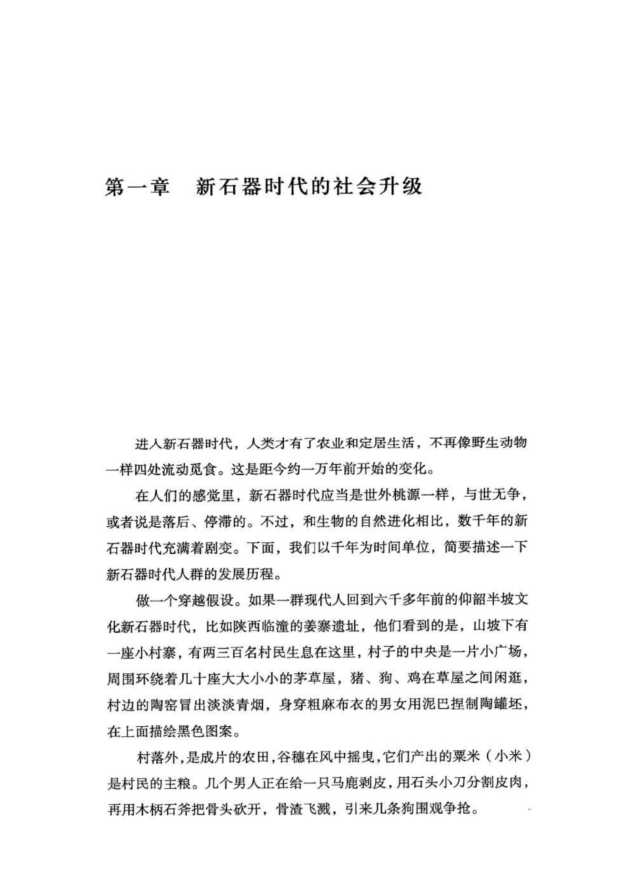
原书阅读器页 038原书物理 PDF 页 036印刷页 24
但还没等来访者走近小桥，狗已经发现了异常，开始狂吠。所有村民都放下了手中的活计，拿起棍棒或弓箭，叫喊着冲向木栅。射向陌生人的是羽箭，箭镞用骨头或石头磨制，插在木箭杆的顶端，用细麻线绑牢。被射中会很痛苦，即使拔出木杆，箭镞也很容易留在体内，被肢解的马鹿就是例子。
第一次尝试失败后，穿越者切换了一种模式，这次是下一个千年，距今6000—5000年之间。
小村落还在原地，只是房屋的布局不再是紧密环绕，而是三五成群，零星分布。村外的壕沟也已经废弃，被生活垃圾填平，人们可以随意进入村落。其他的变化似乎不大。
来访者吸取了上次的教训，他们不再指望和平交易，而是偷偷靠近，然后齐声呐喊，冲进村落——有人还点燃了烟花爆竹。村民被这些奇装异服、掌控着火和雷电的入侵者吓坏了，夺命狂奔而逃。
于是，这群现代人成了征服者，一切粮储和禽畜都是他们的战利品。但好景不长，大半天后，开始有全副武装的“原始人”成群出现在村外。有上千名手持石斧、石矛或弓箭的成年男女，站在最前方的，是头发上装饰着羽毛的巫师，他正在用咒语高声诅咒入侵者。一名男子显然是首领，戴着一串野猪牙项饰，用红石粉涂抹脸颊，手拿一柄玉质光泽的石斧，几名长老簇拥在他身旁，正在合谋进攻方案。
结果是，不论死活，入侵者都将被斩首奉献给本地的守护神祇。
村落、部落到早期国家
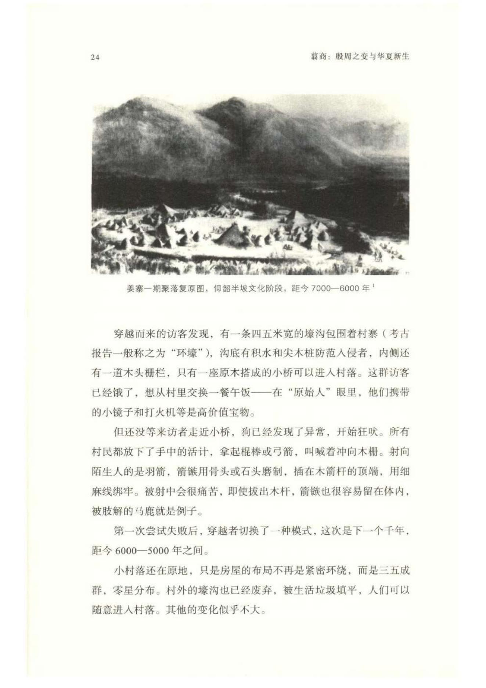
原书阅读器页 039原书物理 PDF 页 037印刷页 25
上面描述的这两种区别，是6000年前中国新石器时代发生的变化。
距今6000年前（仰韶文化前期），村落规模不大，是独立的生活单元，房屋建筑或者中心环绕，或者整齐联排，可能和其他村落贸易、通婚，但固守着本村落的集体自治生活；有自己的防御体系，村落之间时而爆发冲突，坟墓里中箭或被斩首的尸骨是己方战死的勇士，而俘获的敌人则会被处死扔到垃圾坑中，还可能有一些零碎尸骨被抛撒在村落内外。
比如，宝鸡北首岭77M17，仰韶文化半坡阶段，距今6000年，墓主是一名成年男子，可能在对外械斗中被砍掉了头颅，族人特意用一个造型奇特、有黑色花纹的陶罐代替，以示哀悼。随葬器物比较多，还有骨镞等兵器。
宝鸡北首岭77M17出土陶尖底罐线图及照片 [[fn:2]]（图）
距今6000年后，村落的集体生活特征逐渐变弱，独立防御体系也逐渐消失，出现了更大范围的政治体——十几个村落形成的“部落”。这些部落往往有上千人，有世袭的头人及各村（氏族）长老组成的议事会，还有自己部落的图腾和英雄传说。村落没必要再维持单独的防御体系，倘若受到威胁，整个部落都将集体应战，就像穿越者第二次到访的情景。
这种由若干个村子组成的部落，面积可能如同今天的一个或几个乡镇。头人居住的村落是中心，会建造一座比较高级的夯土地基的房子，大约100平方米，作为头人和长老议事的场所以及举行集体仪式的会堂。头人的中心村落可能有防御工事，如壕沟、栅栏等。
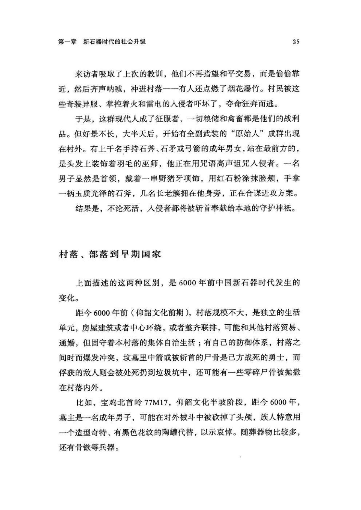
原书阅读器页 040原书物理 PDF 页 038印刷页 26
比如，秦安大地湾四期F901，距今5000余年，主厅面积131平方米，包括院落在内，则为420平方米。房屋地基使用的是特殊的料礓石三合土，平整光滑，硬度接近现代水泥地面。厅内正中有一座圆形大火塘。F901应当是部落的中心建筑，具有较强的公共性，家庭生活的遗迹很少，可能并非部落头人的家宅，主要充当头人和长老议事的场所。
F901平、剖面图 [[fn:3]]（图）
以上，是距今6000—5000年间（仰韶文化中期）发生的最明显变迁。
在千年的维度上，很多变化都是缓慢的。各种技艺的水平，如农作物种植、家畜养殖、制陶、纺织等，一直在缓慢提高着，人口或村落的总量也在缓慢增长。但这些都是量变，而非质变。
唯一明显的变化，是人群“共同体”规模的扩大，已经从百人级别增长到千人级别。它带来的影响也更直接：村落之间的冲突成为过去，和平的日子更多了，但部落间的战争规模却更大了，伤亡也更多。
再到下一个千年，距今5000—4000年之间（仰韶文化末期与龙山文化期），有些地区的人群共同体则变得更大，几个或十几个部落汇聚成了早期国家，如陕西石峁古城、山西陶寺古城，能统治一两万甚至三五万人口，面积相当于今天的一个或两三个县。其中，统治中心已经形成城市，面积有两三平方公里，周围环绕着数米高的夯土或石砌城墙，城内有数百平方米的大型宫殿，上层贵族开始使用精美器物，死后的墓葬里也堆满了豪华随葬品，而且经常用人殉葬。
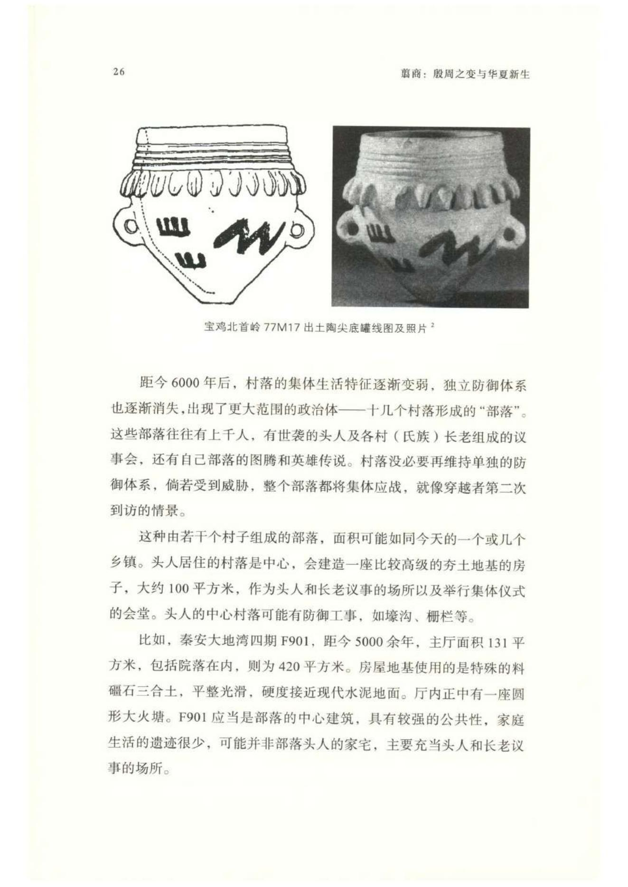
原书阅读器页 041原书物理 PDF 页 039印刷页 27
有些较大的都城，居民会过万，多数是农夫，也分化出了手工业者、世袭统治精英，以及巫师等专业知识人群。巫师观察天象，编制早期历法，研究占卜通神之术。甚至可能已经有了记录语言的原始符号，初步的冶铸铜技术也在悄悄流传。
这时，国家、王朝和文明时代已经不远了。
以上两千年历程，是新石器中晚期到文明（青铜）时代前夜的变化大趋势：从村落到部落再到早期国家。通俗一点说，就是从村级到乡级、县级的递增升级。
对于如何称呼不同规模的人群共同体，特别是万人规模的早期国家，中外学者使用过不同的词，如方国、酋邦、古国等。从便于理解的角度考虑，本书采用“早期国家”和“古国”之称。
但需要注意的是，村落一部落一古国只是用最简单的方式描绘的总体趋势，并不意味着距今6000—4000年间的所有新石器时代人群都准时加入了这个进程。在有些交通不便的地区，孤立的村落可能存续到三四千年前，而部落共同体可能存续到一两千年前，甚至一百年前。这首先是地理条件的限制，越是偏僻、交通不便的地方，小型共同体越容易维持，而缺乏天险环境中的人群更容易被裹挟进更大的共同体。另外，也可能会有历史当事人的主动选择，但作为现代人的我们已经无法验证了。
多数早期国家并不能维持长久繁荣。距今4300—4000年间，华北很多地方同步出现了古国兴衰的一幕：陶寺（山西襄汾）、石峁（陕西神木）、清凉寺（山西芮城）和王城岗（河南登封）等都曾出现古国气象，但在繁盛两三百年后，都发生了解体，重归部落共同体的水平。
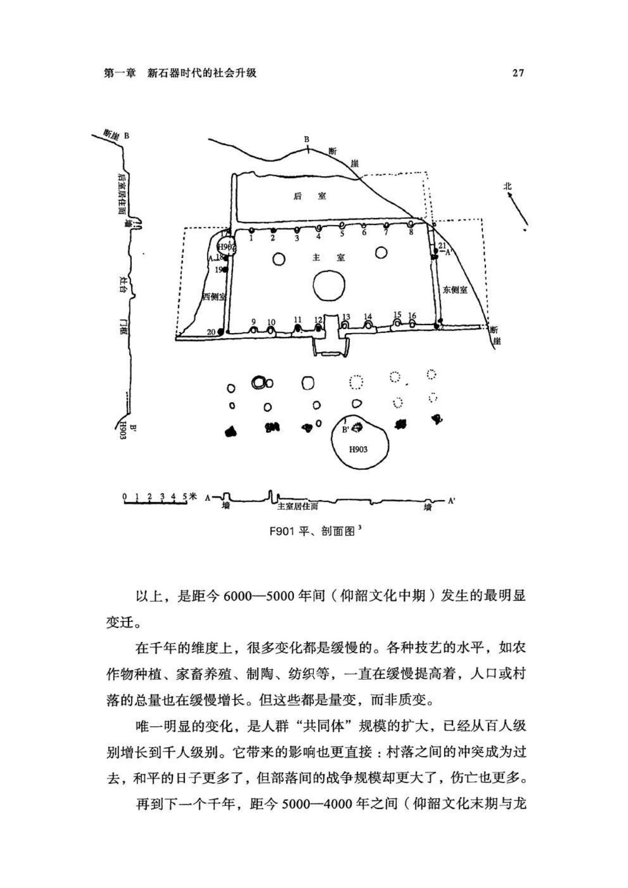
原书阅读器页 042原书物理 PDF 页 040印刷页 28
为何迈入文明时代的门槛会如此艰难？现在尚未有确定的答案。
水稻带来和平？
20世纪与21世纪之交，长江中游的两湖地区陆续发掘出多座距今5000年左右的“古城”，如湖南澧县的城头山和鸡叫城，湖北天门的石家河……一时间，长江中游似乎要成为中国早期文明的起源地。但后续的发掘并未发现跟早期国家与文明相伴生的更多元素，如巨大的宫殿建筑、社会分层现象、金属冶炼技术等，“长江文明起源说”遂逐渐沉寂。
不过，为何长江流域曾产生众多古老的“城”，却是个有趣的问题。若要一探究竟，先要理解黄河与长江流域以及旱作与稻作农业的关系。
新石器时代是基本农业的时代，在人类驯化的主粮中，中国占了两种：黄河流域的粟米和长江流域的水稻，它们分别需要旱地和水田环境。
这两种作物的人工驯化都发生在一万余年前。水稻的考古证据更多一些，因为稻米颗粒大，古人制陶时常在泥坯中添加稻壳，便于考古发现。在长江以南的湖南、江西和浙江，均发现有上万年前的水稻遗存。
稻田需要灌溉和排水系统，需要平整的水滨田块，这是北方旱作的粟和黍从来不需要考虑的。长江流域的新石器人群一直忙于水利设施和稻田工程，而水利设施达到一定规模后，无论耕作面积，还是收获量，都会有实质性的提升。所以，在距今6000—4500年间，两湖地区出现了众多繁荣的稻作聚落。
至于考古报告宣称发现的那些“城址”，其实是为了防洪目的堆筑的。所谓的“城墙”，大都宽数十米，高数米，非常平缓，人可以从容地踱步而上，没有军事防御作用，其用途是防洪，供人们在上面建房定居，躲避南方常见的水患；而挖土形成的洼地水塘，是灌溉稻田的储水设施，有些甚至直到今天还在使用。这种环形土堤是人们改造湿地的手段，直到近代，湖北还有很多，方言称之为“垸（yuàn）”。
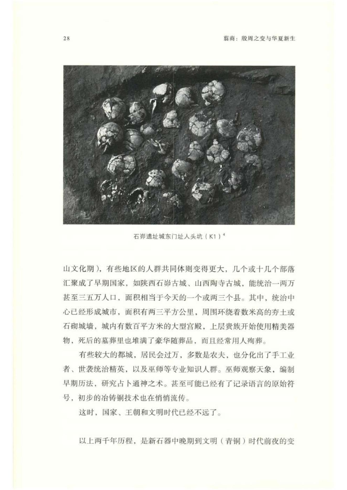
原书阅读器页 043原书物理 PDF 页 041印刷页 29
比如，湖南澧县的城头山“古城”，是一直径300多米的近圆形土围子，其“城墙”非常宽，且平缓，本质是土堤。距今6000—5000年间，经历过多次扩建，取土洼地形成了水塘，有些至今仍在使用。
不过，即使城墙不是军事防御之用，这些水乡古城的意义还是重大，说明当时的人为建造大型水利设施，已经形成超出村落甚至部落规模的较大共同体，统一规划施工，共享水利设施带来的收益。
这是一种基于集体协作的“小流域治理共同体”，不仅人口密度和数量有了实质性的飞跃，而且由于共同体建立的基础是水利协作而非军事征服，所以这些“古城”没有出现明显的社会分层和阶级分化现象，比如，没有特别奢华的墓葬和首领宫殿，战争和屠杀的迹象很少，人祭现象也一直不多。这些都和稻作文化区依赖协作、联合建设水利工程有关。
这种比较和平、均等的稻作社会，还有与之“配套”的原始宗教理念。位于长江中游的5000年前的屈家岭文化，盛行一种埋葬陶器祭祀的风俗，而且是特制的大型陶“筒形器”；后来，又演变成制作巨量的泥塑人偶、动物、小杯子等加以焚烧和掩埋。我们不知道这些行为的具体含义，但它们的社会功能比较清晰，就是群众参与性强，没有财富门槛。这和缺乏战争与人祭的社会环境比较搭配。
比长江中游稍晚一点，距今5000—4900年间，在今浙江杭州市西北郊的余杭区也出现了大型防洪“良渚古城”，以及复杂的灌溉堤防体系。这座古城一度接近了早期国家的门槛，有非常明显的阶级分层，贵族统治者有建在土筑高台之上的豪华殿堂，墓中随葬大量精美玉器，有些高级玉器上还刻着宗教意义明显的“神人兽面纹”和神鸟纹，可见祭司阶层比较活跃。
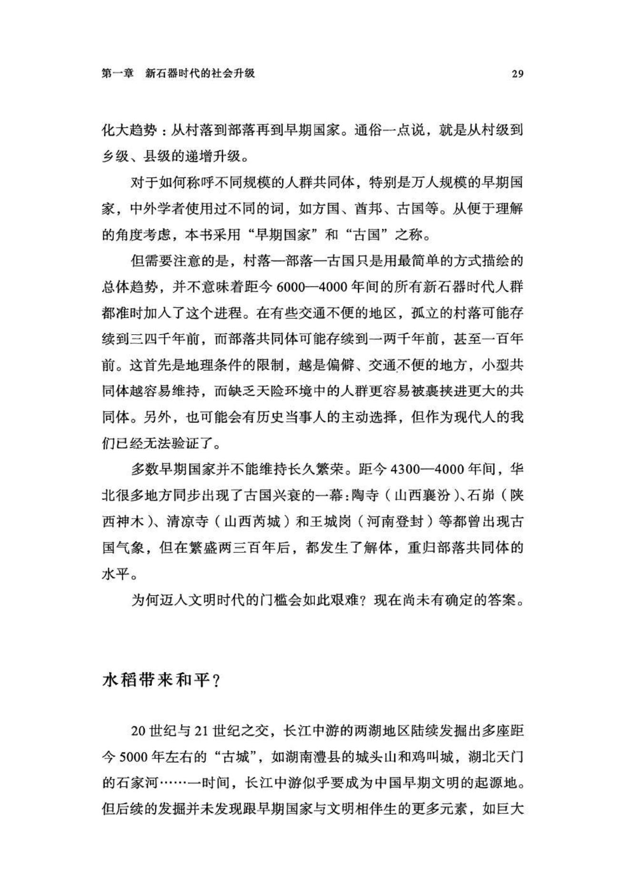
原书阅读器页 044原书物理 PDF 页 042印刷页 30
在良渚古城的繁荣阶段，并未见到人祭现象，而且它的繁荣只维持了一两百年，然后王者一级别的宫殿和墓葬都消失了，社会又退回到部落林立的状态。[[fn:5]] 后来，在今太湖东岸的良渚文化地区发生了频繁的冲突，伴随着批量杀人献祭和人殉现象（今江苏昆山、上海青浦地区），但这些冲突一直停留在部落间战争的层次，从未发展到古国水平。
结合气候变迁看，在一万多年前，地球的上一轮冰期结束，气温持续上升，开始进入“全新世大暖期”，到距今5000年左右，湿热气候达到顶峰，长江流域人群兴建水利设施的高峰也恰好出现在此时。然而，在距今4500年之后，长江流域曾经繁荣的古城皆陷入萧条。有学者认为，是大洪水导致了南方的低迷，但证据尚不够充足。
再来看人祭宗教现象。
距今6000年前，黄河流域开始有零星的苗头，如西安的仰韶半坡遗址，村落中心一座半地穴式大房屋F1的地基中埋了一颗人头[[fn:6]]：这座房屋是村落的公共活动中心，在地基中埋入人头应当有宗教用途。
距今4500—4000年间，南方稻作区陷入沉寂，黄河流域则开始进入龙山文化阶段，各地出现了很多部落间的冲突或战争迹象，证据是批量处死的尸骨以及夯土或砌石的城防等。比如，河南的王城岗古城，宫殿夯土中有13座人奠基坑，每座坑中都埋有多具尸骨，但由于没有全部发掘，所以无法统计用人总量，唯一完整发掘的一号奠基坑内埋有七具人骨。[[fn:7]] 在河南安阳后冈，发掘出39座不大的房屋，奠基童牲27人，[[fn:8]] 说明这里修建房屋流行用儿童奠基。[[fn:9]] 陕西神木石峁古城东门，至少有五座人头奠基坑，埋有青年女子人头近百颗。山西襄汾陶寺古国的宫殿区也有人头奠基坑，芮城清凉寺墓地中则埋有大量殉葬的人。
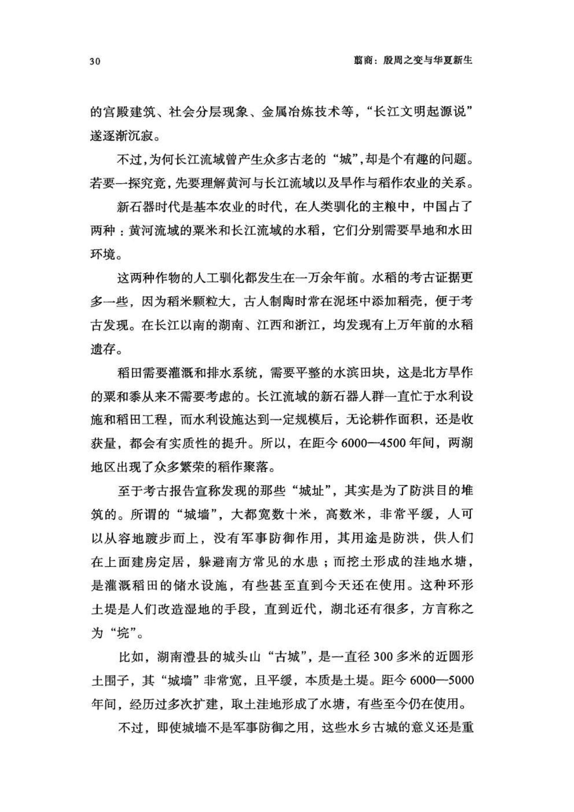
原书阅读器页 045原书物理 PDF 页 043印刷页 31
王城岗古城宫殿区的一号奠基坑（二期）照片及平面图：埋两名女性青年、三名儿童、两名男性壮年[[fn:10]]（图）
此外，在一些部落级别的聚落里，也有多人一起被杀的现场，从河北、河南到陕西，都发现了此类尸骨坑，如邯郸涧沟、郑州大河村、洛阳王湾、西安客省庄等，但尸骨码放并不规整，也没有其他的祭祀特征，所以不能确定是否都是宗教目的的杀人献祭，也许有些只是对俘虏的批量屠杀。
在新石器时代，华北地区之所以动辄爆发冲突或战争，人祭兴盛，可能和旱作农业不需要水利设施[[fn:11]]、人群之间没有协作的动因有关。而伴随着征服的，是人群共同体规模的不断扩大，从而催生了众多古城和早期国家。
不过，简单的分类和归纳注定不足以涵盖复杂的社会现象，任何“规律”都会存在例外。稻作的良渚文化内部也曾有过局部冲突和人祭现象；华北各龙山古国中，人祭和屠杀的数量也不相同，陶寺的人祭可能要比石峁少得多。[[fn:12]]
到距今4000年前，华北地区一度星月同辉的各小型古国陷入沉寂，部落间的冲突现象也已减少，长江和黄河流域则了无生气。此时的华北地区虽零星地存在两种技术，一是可能从西北方传来的处于起步阶段的冶铜技术，二是从长江流域传来的非常成熟的水稻种植，但它们似乎并未引起华北新石器人群的太大关注，还只是可有可无的点缀。
然而，在河南的嵩山脚下，却有一个小部落意识到了这两种技术的价值，而且也善于寻找更适合发展这两种技术的新环境，于是，华夏第一王朝的故事开始上演。
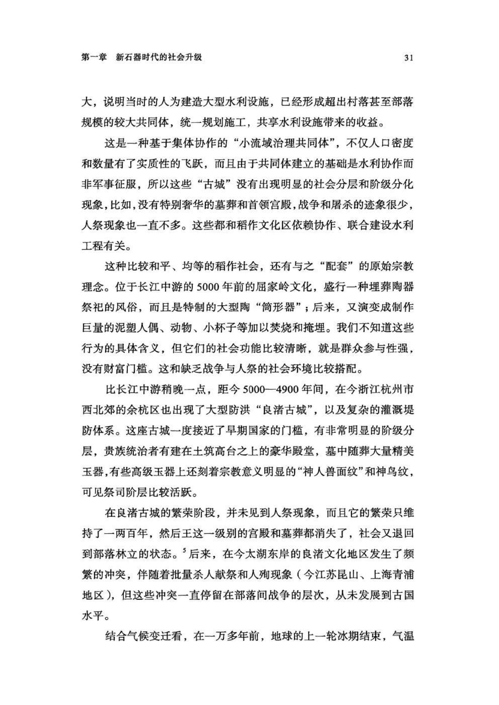
原书阅读器页 046原书物理 PDF 页 044印刷页 32
注释
1 巩启明：《姜寨遗址发掘回顾》，《中国文化遗产》2010年第1期。
2 中国社科院考古所宝鸡工作队：《一九七七年宝鸡北首岭遗址发掘简报》，《考古》1979年第2期；中国社科院考古所：《宝鸡北首岭》，文物出版社，1983年。
3 甘肃省文物工作队：《甘肃秦安大地湾901号房址发掘简报》，《文物》1986年第2期；钟晓青：《秦安大地湾建筑遗址略析》，《文物》2000年第5期。
4 石峁古城的发掘还处于起步阶段，古城全貌尚未得到揭露，但已经发现了残忍而且大规模的人祭现象。参见孙周勇、邵晶《瓮城溯源：以石峁遗址外城东门址为中心》，《文物》2016年第2期；陕西省考古研究所《发现石窕古城》，文物出版社，2016年。
5 浙江省文物考古研究所：《良渚古城综合研究报告》，文物出版社，2019年，第354、364、440页。
6 中国社科院考古所：《西安半坡：原始氏族公社聚落遗址》，文物出版社，1963年，第18页。
7 河南省文物研究所、中国历史博物馆考古部：《登封王城岗与阳城》，文物出版社，1992年。
8 中国社科院考古所安阳工作队：《1979年安阳后岗遗址发掘报告》，《考古学报》1985年第1期。
9 到殷商后期，这里又出现了恐怖的H10圆形三层祭祀坑，不过和龙山时代相隔已有一千余年。
10 河南省文物研究所、中国历史博物馆考古部：《登封王城岗遗址的发掘》，《文物》1983年第3期。
11 至少是石器时代还不需要，到铁器时代，随着华北人口密度增加，有些旱作地区也需要灌溉设施来提高产量。
12 石峁遗址有中心宫殿建筑区“皇城台”，有外围石砌围墙，虽然目前只在城墙东门和皇城台分别发现密集的人头祭祀坑以及部分尸骨坑，尚未发布详细的发掘报告，但仅从东城门祭祀坑看，石峁古国的人祭行为已经有很大规模。
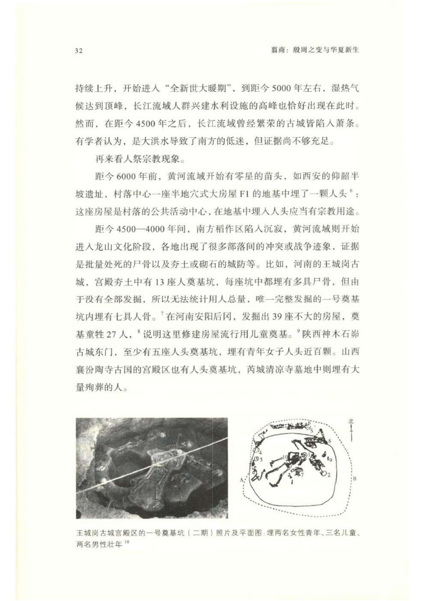
原书阅读器页 047原书物理 PDF 页 045印刷页 33
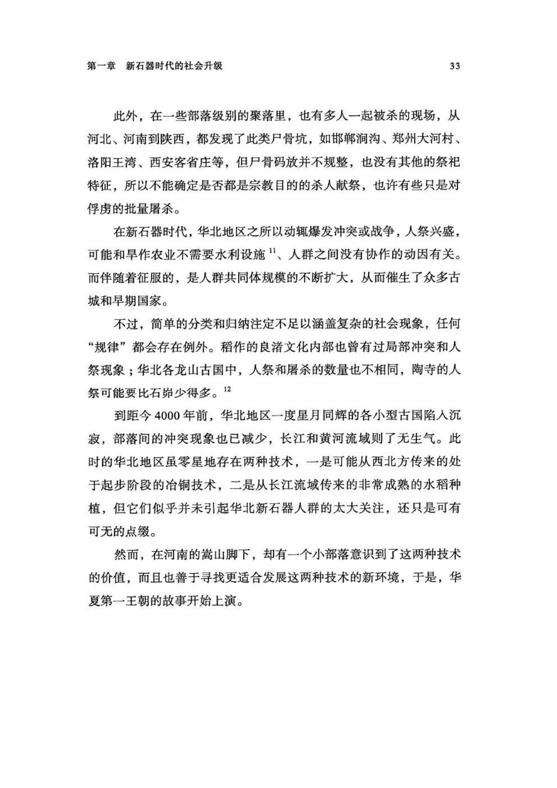
原书阅读器页 048原书物理 PDF 页 046印刷页 34
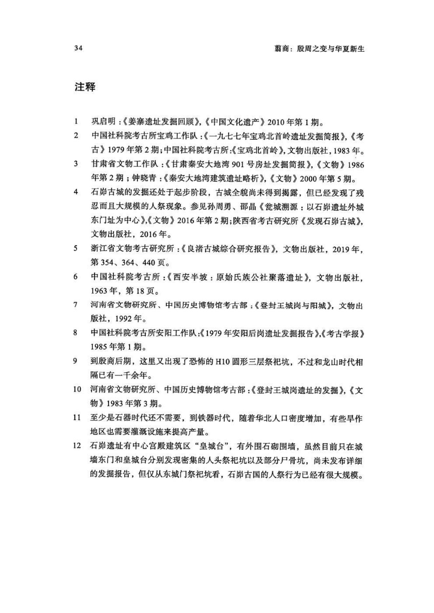
编辑札记
标记
先在正文中选择文字，再输入拼音；可用“拼音；简注”。